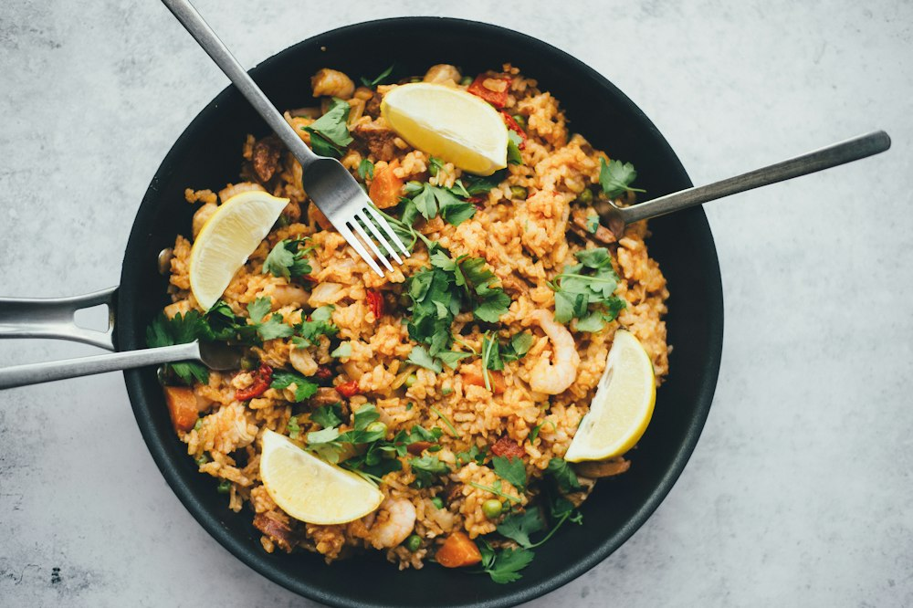

Dim Sum Gallery
舌尖上的百花齐放
 水晶虾饺
水晶虾饺
海鲜炒饭 酥炸点心
酥炸点心功夫茶
从落座到埋单，每一步都有自己的讲究。
普洱、菊普或铁观音，先点一壶茶。茶是早茶的灵魂，用以清口、助消化，更是闲聊的由头。
虾饺、烧卖、叉烧包……"两件"只是起步，真正吃起来，桌上很快堆起小山。
看报纸、聊家常、谈生意。慢悠悠的一上午，把日子过成了诗，这便是"叹"的真谛。
师傅们凌晨就开始备料，第一笼虾饺在蒸汽中晶莹剔透，老茶客已端到坐在熟悉的卡座。
推车仔穿梭于桌椅之间，"虾饺烧卖叉烧包——"的吆喝声，是茶楼最动人的背景音乐。
一杯茶续了又续，从家常聊到时事。早茶桌，是这座城市最温暖的客厅。
伙计一声"埋单"，一上午的惬意画上句点。带着满足与闲适，迎接新的一天。
水晶虾饺
海鲜炒饭酥炸点心"叹"在粤语里有享受、悠闲之意。它强调的是那份从容不迫的心境——喝茶不是为了赶时间，而是为了享受过程。一字之差，道尽岭南人的生活哲学。
"一盅"指一壶茶，"两件"指两样点心。这是早茶最经典的起步配置。当然，真到了茶楼，很少有人只点两件——往往一不留神就点了满满一桌。
这是老广的暗号：把茶壶盖揭开斜靠在壶边，伙计看到就会主动来续热水。无需开口，一个动作便心意相通，是茶楼里默契的温情。
它属于"蒸笼点心"里的荤点。传统茶楼用推车仔推送点心，客人看中哪笼直接拿，丰俭由人，这也是早茶"看得见、选得着"的乐趣所在。